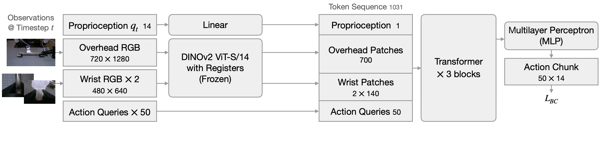
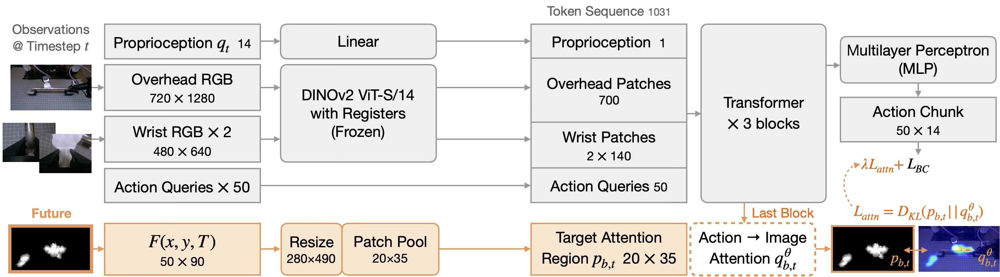
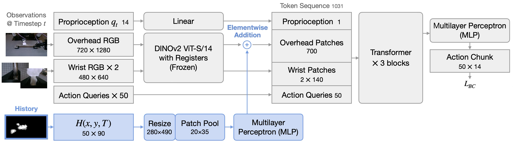

Acoustic-Video Perception for Robot Manipulation with Occluded Contact Dynamics
Almost all manipulation tasks involve occluded contact dynamics: it is inherently difficult to visually observe detailed surface contacts as they are created and changed. Consider grasping, assembly, peeling, or pushing - even a planar task like "Push T" hides the contact between object and surface. Such contact, however, generates vibroacoustic sound through friction and provides useful contact information. In this paper, we explore how a low-cost acoustic camera can perceive occluded contact dynamics to enhance robot manipulation. We use microphone array beamforming to localize audio over time in a 2D RGB camera image plane. When overlaid on video, we call this an Acoustic Video (AV) stream. We present two approaches to using AV: 1) AV-Attention and 2) AV-History. We build both AV approaches on the encoder-only Action Chunking Transformer for an efficient manipulation policy trained by imitation. Across five contact-rich manipulation tasks, experiments suggest that AV improves task success rate by 21.0% and progress by 16.1% on average compared to Vision-Only and mono-channel audio approach baselines.
A low-cost microphone array captures the sound field around the workspace. Combined with a co-registered RGB camera, we can localize sound sources over time and project them onto the same image plane.
From an RGB frame + microphone array, we localize audio on image plane ($A(x,y,t)$) and derive two temporally accumulated representations: a History representation (past acoustics accumulated up to now) and a Future representation (future acoustics going onward), where $T$ is the elapsed time and $T_{final}$ is the maximum teleoperated demonstration length.
Both methods share the same trunk (gray). Click a tab to see how each method turns the acoustic-video stream into a training signal or an extra input.



Vision-Only Backbone. Proprioception, overhead RGB, and two wrist RGB streams are encoded by a frozen DINOv2 ViT and concatenated with learned action queries into a token sequence, which a 3-block transformer maps to an action chunk supervised by behavior-cloning loss $\mathcal{L}_{\text{BC}}$.
Method 1 · AV-Attention. The acoustic-video signal $A(x,y,t)$ is resized and patch-pooled into a $20\times 35$ grid (pink), then used as a target attention region $p_{b,t}$ (orange). We read the transformer's action→image attention $q^{\theta}_{b,t}$ from the final block and add a KL-divergence loss $\lambda\,\mathcal{L}_{\text{attn}} = D_{\text{KL}}(p_{b,t}\,\|\,q^{\theta}_{b,t})$ so the policy learns to look where sound is happening. Audio never enters the forward pass — it only shapes the attention during training, does not need audio processing at deployment.
Method 2 · AV-History. The acoustic-video signal $A(x,y,t)$ is resized and patch-pooled into a $20\times 35$ grid (pink), then a per-patch MLP ($1\!\rightarrow\!384\!\rightarrow\!384$) lifts it into token space (blue). Those tokens are element-wise added to the overhead image patches before the transformer. Token count is unchanged (700 stays 700), no extra attention cost, and audio is an input at both train and test time.
We evaluate on five representative manipulation tasks that passively and naturally make sound during manipulation. Drag the slider on each tile to compare RGB vs. AV.
We compare our two AV methods against a Vision-Only baseline and a ManiWAV-inspired baseline that consumes mono-channel audio. Pick a task to load side-by-side rollouts of all four methods.
The AV-Attention method guides the policy toward critical, task-relevant visual features. Each row compares Vision-Only (left) with AV-Attention (right).
Besides the failure modes we cover above, we provide a few more characteristic failures observed: